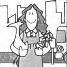

A Concert at the Irving Place Conservatory
MOTHER feels strongly that youths can be creative "doers," working toward more ecological and self-reliant lifestyles . . . whether their tasks be raising chickens on a farm or maintaining rooftop container gardens in the city. To support the endeavors of our often overlooked "underage" citizens, we're glad to publish well-written articles from younger children and teenagers concerning projects they've undertaken. However, we recommend that all young authors query (that is, send us a letter telling about the story they'd like to do) before writing a full article. Address inquiries to Mother's Children, THE Mother Earth News, 105 Stoney Mountain Rd., Hendersonville, NC 28791.
Many people forget that entertainment can be made at home with friends and neighbors and that you do not have to go to movie theaters or some such thing to get entertained. Last fall my brother, Ishmael, and I gave a concert at our house, which we call the Irving Place Conservatory. We call it a conservatory because Ishmael plays the piano, I play the piano and the violin, my father plays the cello (but not very well), and my mother plays the viola and the piano (not very well either). My brother also composes, and I sing. We call it the Irving Place Conservatory because we live on Irving Place.
We decided to give a concert to show our friends and neighbors all the work that we had done on music in the summer. We also thought it would be fun to be in a formal concert with a stage door, much applause, fancy clothes, and encores.
Everyone enjoyed our concert. My mother said it reminded her of the parties that her grandmother used to go to, where she would be asked to sing and play the piano. It reminded me of the party in Laura Ingalls Wilder's book Little House in the Big Woods, where Pa played the fiddle and everyone danced. Anyway, I thought I would tell you how we put on the concert so you could do something like it if you wanted to.
Actually, we were already experienced at putting on performances at our house, and we had learned what was involved . . . the hard way. Like many children, Ishmael and I had put on unplanned plays and concerts for our parents when we were little. One thing we used to do was to make instruments-zithers strung with fishing line, xylophones made out of beer bottles, and such-and play on those. But they usually broke, or else we forgot what we were going to do.
Later on we got more organized and put on plays with some of the neighboring kids. We hung a sheet across part of the back porch for a curtain and tacked up sheets with scenery painted on them. Once we even made a dragon by putting sheets on the mowing machine that our parents kept on the back porch.
It certainly wasn't a perfect theater! And many times our neighbors got sick when we had planned to do a performance, or the audience didn't show up. Also, sometimes we fought over who would play what part and even over how the plays were supposed to go.
In desperation, Ishmael and I decided to start our own theater in the attic. Ishmael wrote plays for this theater, which were only two to five minutes long. But these plays had words and music (my father played the music for us on the recorder).
We used old chairs from the attic for the audience to sit on (the audience was never bigger than four people), and once again we used a sheet for a curtain. We even used a toy printing press to make the tickets, and we charged 5 cents per person. These plays were fun. We had many rehearsals, we were very organized, and we took great care with the costumes. The audience (even if it was small) was always very enthusiastic!
One day we got the idea of having a concert for our two nearest neighbors. We made programs and invitations. Both families came. There were many small children and a dog. We had made cookies for the kids so they wouldn't get bored while we played, which (although we had not intended them for the dog) the dog ate! And the ones that the children did manage to get were eaten very noisily. You can imagine how hard it was for us to concentrate in all the confusion!
This fall, though, we decided to give a concert that wouldn't be so much of a disaster. We knew it would mean hard work, but we thought it would be worth it.
The first thing we did was to think up a program. We decided that first I would play a few pieces on the piano, and then Ishmael would play a few pieces, also on the piano. After a short break, I would play two pieces on the violin, and then Ishmael would play a large piano piece (by Mendelssohn) that we knew would be a crowd pleaser. At the end our whole family planned to play a quartet that Ishmael had written for violin, viola, cello, and piano.
Once we were sure of what we wanted to play at the concert, we sent out invitations. On the front of each invitation I drew a picture of a piano and a violin, and inside I wrote: "You are cordially invited to attend a concert to be held at the Irving Place Conservatory." And then I wrote the address and time, and then: "There will be a reception afterward."
Fortunately, my mother let us use her stamps to mail the invitations. (If you have to get your own postage stamps, you will have to figure out ways to earn the money to buy them, like raking leaves or mowing lawns.) Meanwhile, Ishmael wrote the program notes and, as in the real concerts that we go to, he described each piece in great detail. My father made 40 photocopies for us.
During the next few weeks we practiced much more than usual. But most of all we practiced the quartet, because it had such hard rhythms. The week before the concert we did many run-throughs, which included me coming out at the beginning and saying, "Welcome to the Irving Place Conservatory. We hope you have a good time today, and please stay for refreshments afterward." We also practiced bowing, coming out on "stage," and playing our pieces straight through from beginning to end.
We also had to figure out where to sit when we played the quartet in the concert because the room was going to be so crowded with people. We finally decided that the only room we had was behind the piano, but we worried that our friends would have a hard time hearing us. So we got my father's cello teacher to listen to one of our rehearsals. She said that if I played a little louder, it would be fine.
The night before the concert, we started cooking. I cut up lots of vegetables, arranged them on a platter, and made dip while Ishmael made banana bread and my mother made a cake. Then we gathered chairs from every nook and cranny in the house and placed them in rows facing the piano. We even used the chairs that I have in my playhouse.
The next day we got up early, put on our best clothes, and had another run-through. Then we prepared more food. This time we made small sandwiches and put nuts and dried fruit in little bowls. Then I arranged everything neatly on the table. (We were lucky that our parents didn't mind paying for all the food. Your parents may not want to do that, so another thing you could do would be to have a potluck and ask everyone to bring something.)
Soon it was time for everyone to arrive. All the people we'd invited came, and we passed out programs and program notes to them at the door. I gave my little speech, and we played our pieces. Luckily, everything went well. After each piece there were many cheers and calls for encores.
Afterward, everyone ate all the food. Some people had to leave, but others stayed to play chamber music, since many of our friends had brought their own instruments. Later some kids played the piano, and one boy played a piece that he had composed. We had never had such a fun party before!
I think this definitely shows that you can have fun at home. Of course, you don't have to put on a concert. There are many other kinds of entertaining that you can do at home. You could put on a circus, for example, or you could turn your basement into a haunted house, the way our neighbors did. They dressed up as scary creatures and lit their basement by candlelight. When people came in, they frightened them with spooky noises, shot water at them with water pistols, and made them crawl through a tunnel that had ice in it. As you can imagine, no one stayed at the haunted house for fun afterward, as they did at our concert, so making refreshments wasn't a problem!
My mother is talking about having a play-reading party, and that sounds like a different kind of fun, since everyone would be participating. We'd pick a play to read, get a lot of copies out of the library, and invite friends over to read the parts out loud . . . and perhaps do a little bit of acting.
Whatever you do, though, there are a few things we've learned from experience that will help you to entertain your friends. Here is a list of suggestions:
[1] Choose something you'd enjoy doing. If you know that you are going to enjoy it, most likely your friends will, too.
[2] Plan your program carefully, so that your friends will not get bored.
[3] Be sure your friends know where when ‘n’ it's happening. Send out invitations or put up posters in the neighborhood or call up your friends on the phone to tell them.
[4] Rehearse as much as you can so you know exactly what you are going to do.
[5] If you want your friends to stay afterward, either make lots of food or ask them to bring food (a potluck maybe).
[6] Think twice before you invite dogs!
[7] Enjoy yourself!!
EDITOR'S NO TE: Vita's brother, Ishmael, wrote "How to Build a Raft," the article that kicked off our Mother's Children feature back in issue 68!
|
PHOTO BY ROBERT WALLACE |
 |
|